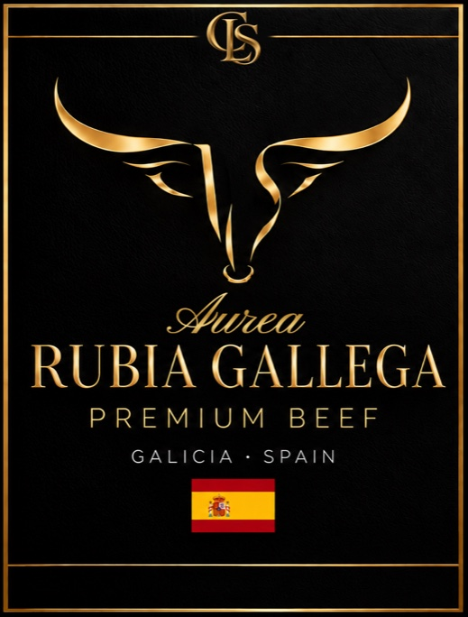

Linea 01 · Aurea
Rubia Gallega
Lombate di razza Rubia Gallega, la razza bovina autoctona della Galizia. Carne rossa e magra, con poca infiltrazione e la copertura di grasso giallo tipica della Galizia. Sapore pulito e deciso.
Solo razza Rubia GallegaLombata